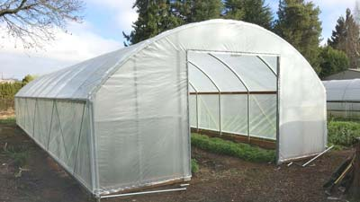
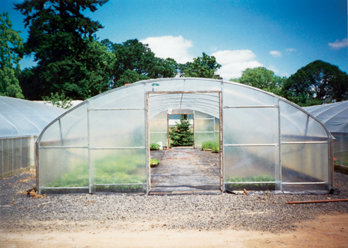

This is a greenhouse, where the pipe arches or trusses are supported by pipe purling running along the length of the greenhouse. In general, the covering material used for this type of greenhouses is polyethylene. Such greenhouses are typically less expensive than the gutter connected greenhouses and are useful when a small isolated cultural area is required. These houses are connected either in free, standing style or arranged in an interlocking ridge and furrow.In the interlocking type, truss members overlap sufficiently to allow a bed of plants to grow between the overlapping portions of adjacent houses. A single large cultural space thus exists for a set of houses in this type, an arrangement that is better adapted to the automation and movement of labour.
In the plant-growing business, you cannot afford to have your greenhouse fall apart in the middle of the growing season. Even a few minutes of exposure to wind, rain, sleet or hail can ruin your crop and set you back thousands upon thousands of dollars. As a savvy businessperson, you also need to keep your expenses low to reap the maximum returns on all of your precious, fragile investments.With all of the available greenhouse options out there, how can you be sure that the one you choose will be the one that best protects the backbone of your business? The Quonset style greenhouse is the one that is efficiently made from virtually indestructible Kee Klamp fittings is the one that you need to put your money, and your trust, into building right for the very first and very last time.